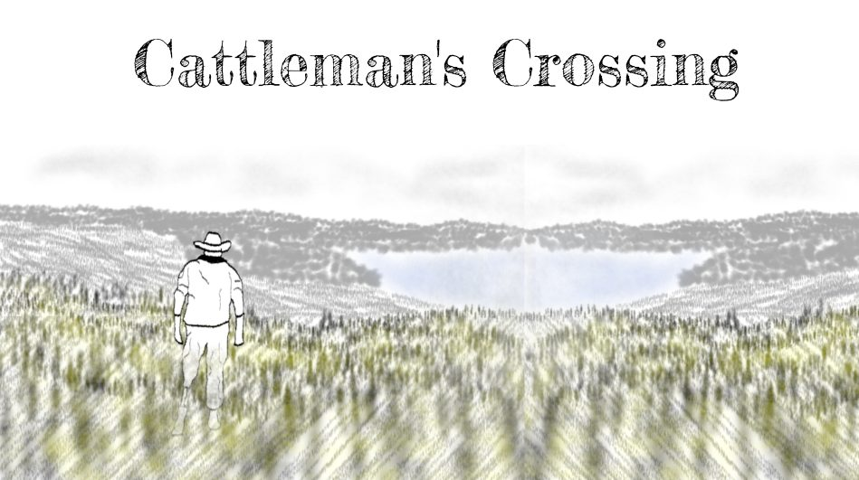
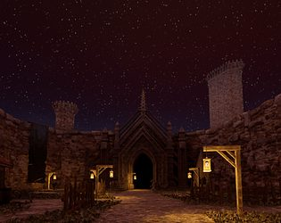
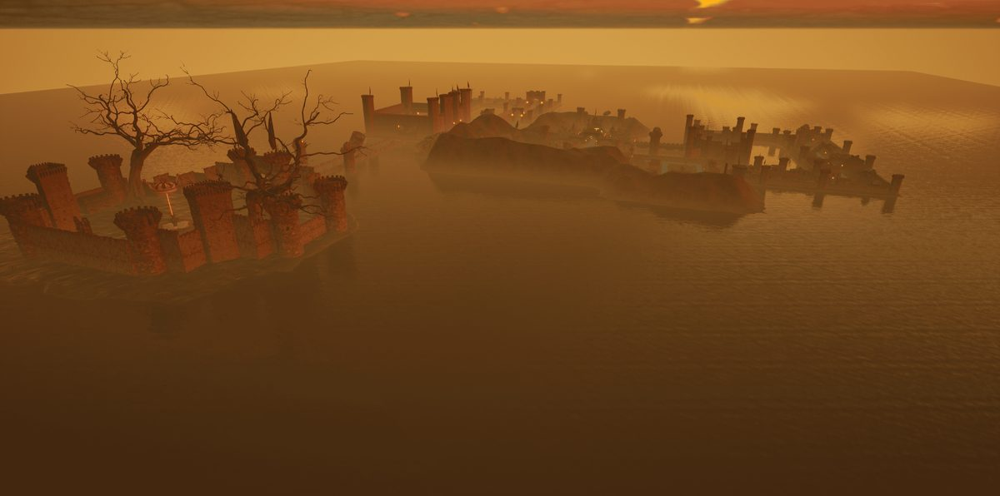
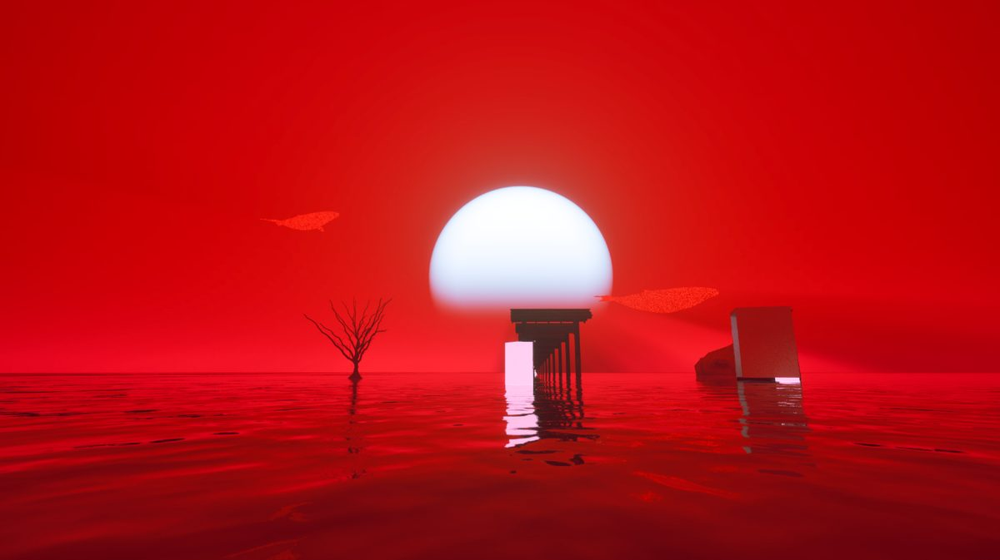
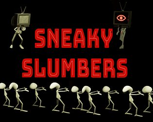
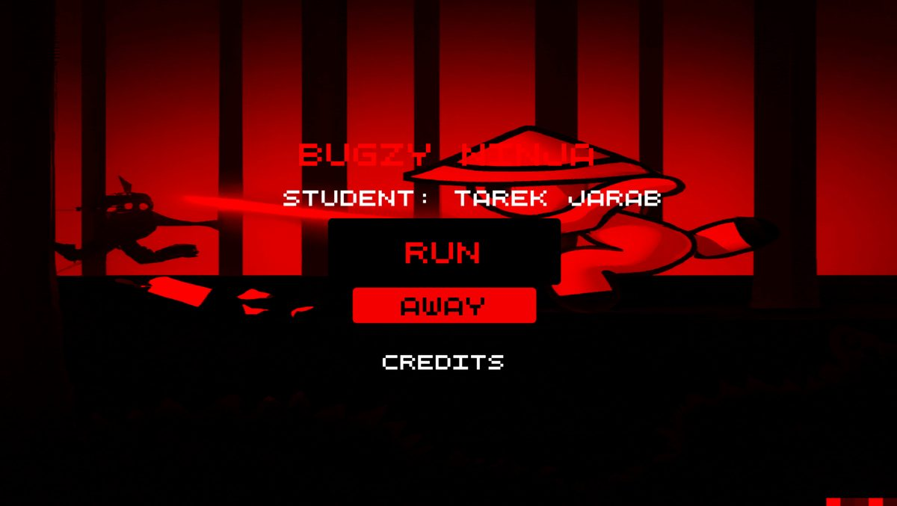
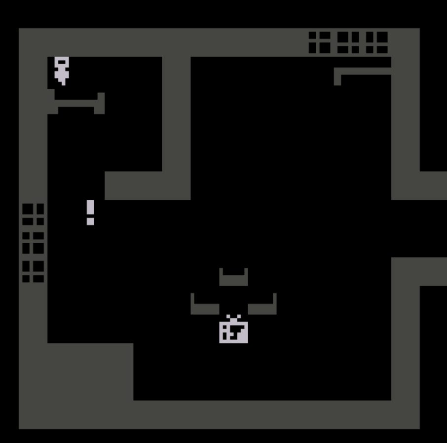
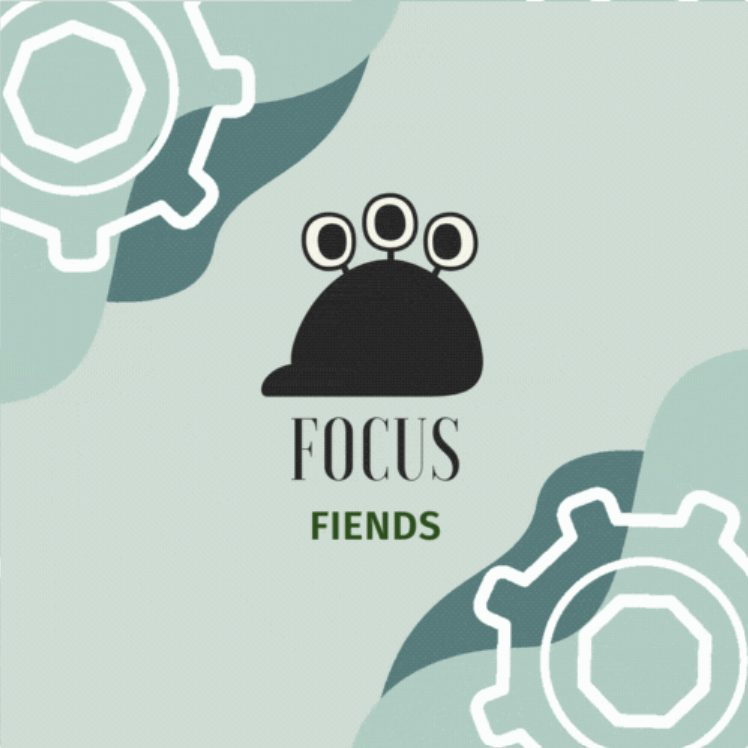

Cattleman's Crossing
A year-long York University capstone, released on itch.io and presented at the Level Up Showcase 2025 in Toronto. I built core gameplay systems and Blueprint logic and handled final build integration, working with design, art and audio on weekly milestones. I also managed Git for the team across the 12-month cycle, resolving merge conflicts and keeping branches clean.
Play on itch.io →
HorrorHugger
A story-driven maze game. I led sprint planning, code review and integration through a full semester of production through to release. I also designed and implemented the "hug & shove" combat mechanic and a series of hand-built maze levels.
Play on Game Jolt →
Grave Runner
Two genre variants, Boss Rush and Boss Run, released from a single codebase in a one-month cycle. I implemented the gameplay loop for each variant.
Play on itch.io →
Walks on Your Skin: Prologue
A first-person narrative experience. I built the player controller, narrative triggers, ambient audio system and environmental interactions myself.
Play on itch.io →
Dissolution
A short first-person experience built around environmental storytelling and exploring surreal levels.
Play on itch.io →
Sneaky Slumbers
A stealth game set in a dystopian orphanage: slip past the guards by pretending to sleep.
Play on itch.io →
Bugzy Ninja
An arcade runner: escape a giant bug while collecting items for score and power-ups. This was my first game shipped in Unity.
Play on itch.io →
Chopper's Rampage
A short narrative horror game made in Bitsy. It was the first game I made and released.
Play on itch.io →
Focus Fiends
A concept site for a social productivity app that pairs you with a friend or a creature to stay accountable. I designed the site, custom assets and animated promo for DATT 2100.
Visit site →